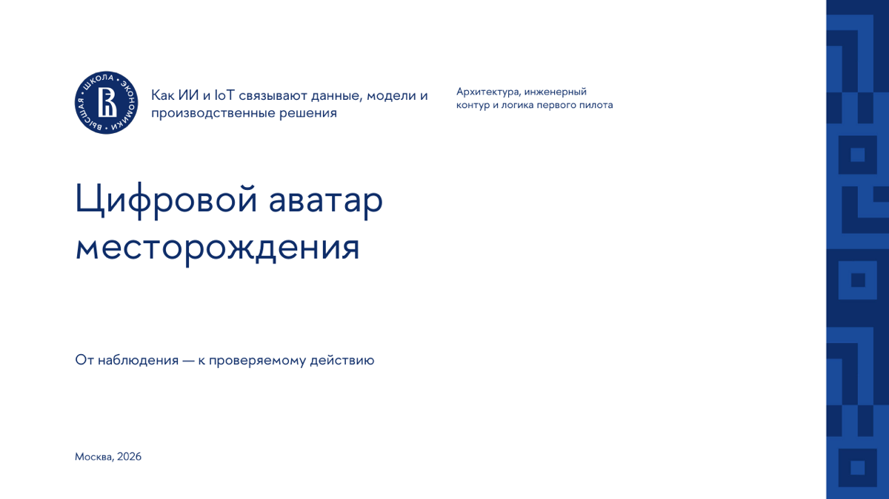

Открыть PDF ↗
Открыть PDF ↗
01GAMMA AI
Цифровой аватар месторождения
9 слайдов · светлая редакционная композиция · PDF-просмотр и исходный PPTX.
ОДНА ТЕМА · РАЗНЫЕ ИНСТРУМЕНТЫ
Сравните, как разные ИИ-инструменты визуализируют одну тему: «Цифровой аватар месторождения: ИИ и Интернет вещей в добыче газа».
Открыть PDF ↗
9 слайдов · светлая редакционная композиция · PDF-просмотр и исходный PPTX.
 Открыть PDF ↗
Открыть PDF ↗
8 слайдов · корпоративная схема · PDF-просмотр и исходный PPTX.

Открыть PDF ↗12 слайдов · работа по корпоративному шаблону · PDF-просмотр и редактируемый PPTX.
2:28 · озвученная горизонтальная видеопрезентация · Full HD 1920 × 1080.